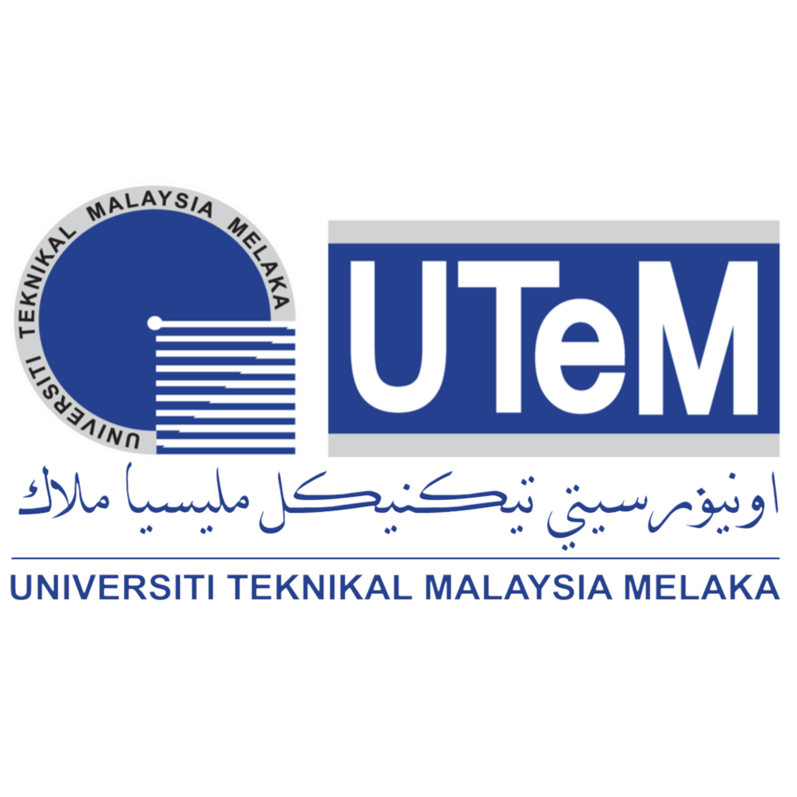
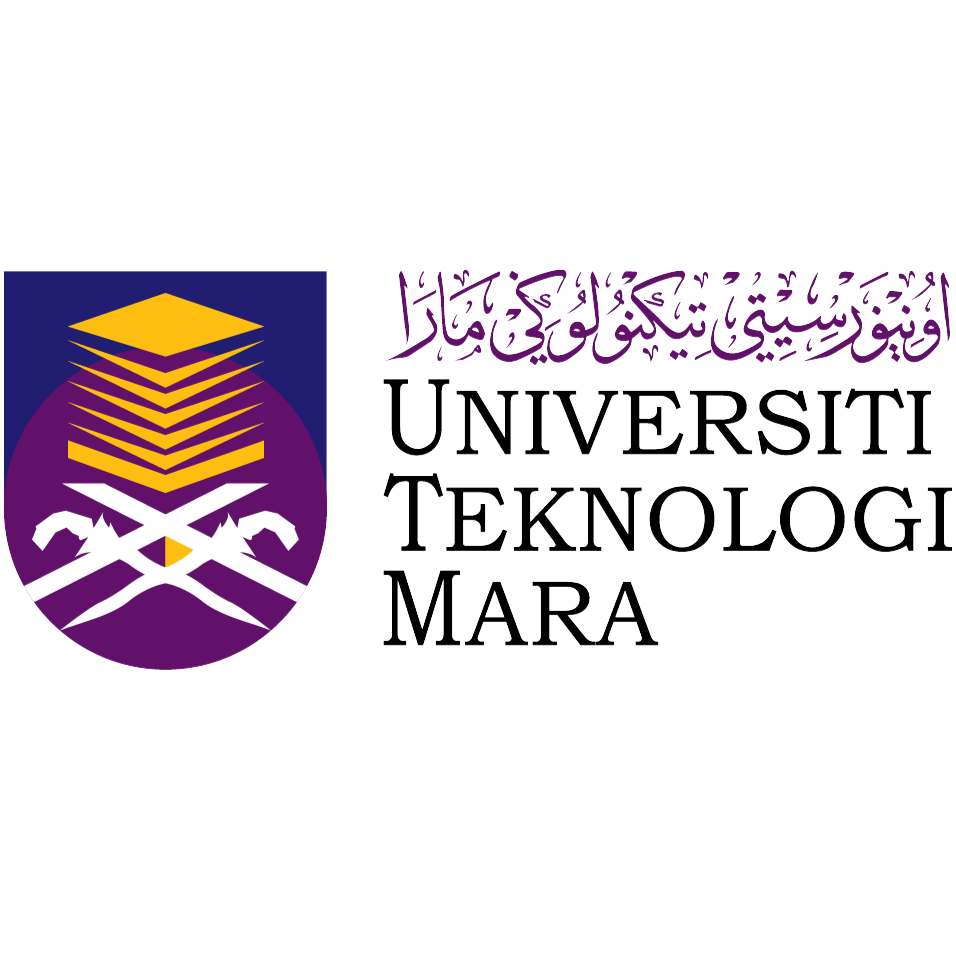
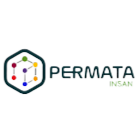

Academic History

Universiti Teknikal Malaysia Melaka
Bachelor of Information Technology, Game Technology
Oct 2022 - Now
CGPA: 3.54
Activities and Societies:
- FTMK ICT Student Club (FICTS)
- Interactive Media Club (IMC)
- UTeM Runner Orienteers Club (UROC)
- Persatuan Seni Silat Gayung Malaysia UTeM (PSSGMUTeM 21/22)
Position:
- Presiden of IMC, Fakulti Teknologi Maklumat dan Komunikasi
- Exco Multimedia of UROC, Universiti Teknikal Malaysia Melaka
Skills: Leadership, Monetization, Game Development, Modelling

Universiti Teknologi MARA
Foundation degree, Engineering
Jul 2021 - Aug 2022
CGPA: 3.67
Activities and Societies:
- Persatuan Silat
- Creations de UiTM
Skills: C (Programming Language), Research, DaVinci Resolve

Kolej PERMATA Insan
Malaysian Certificate of Education (SPM), Applied Science
Jan 2016 - Nov 2020
SPM: 6A 5B
Activities and Societies:
- Pasukan Kadet Bomba Dan Penyelamat Malaysia
- Science Technology Engineering Mathematics (STEM)
- Olahraga
- Badminton
Skills: Research